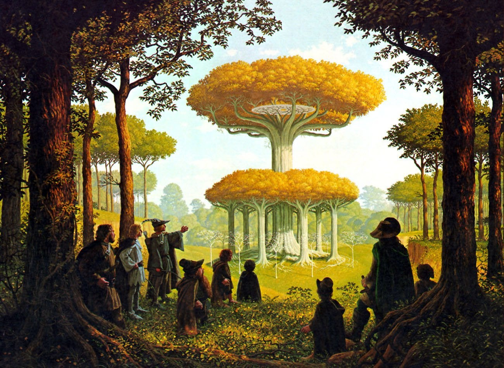

<!doctype html>
<html>

<head>
  <meta charset="UTF-8">
  <meta name="viewport" content="width=device-width, initial-scale=1">
  <title>Afterimage: Medieval Modernity</title>
  <link rel="shortcut icon" type="image/png" href="../favicon.png"/>
  <meta name="description" content="Graphic Design BA Thesis">
  <meta name="author" content="Radek Górniak">
  <link rel="stylesheet" href="../css/text_style.css">
  <script src="script.js"></script>
</head>

<body>


  <div class="big_container">
    <h2>Farewell, or <br />only a Greeting</h2>

    <figure>
      
      <figcaption><em>Lothlorien</em> by Greg and Tim Hildebrandt</figcaption>
    </figure>


    <p>Initially when I was going into this topic, I was simply following my instinct for interesting images, and I was mainly aiming to treat this text as a chronicle for the time I was writing it in, and the research I have done. </p>

    <p>However, I was happy to discover that by spending some time learning about Middle Ages, I was be able to gain a better understanding of the period, and how it has far-reaching effects on so many areas of, well, everything. It felt refreshing
      to be able to break through the surface of shallow Internet research, going into archives, touching history, looking for it everywhere, around the streets, under my bed. By doing that, and most importantly, discussing fantasy with others, the
      story started to emerge. I saw that when seen in the &quot;real&quot; world, the Medieval afterimages serve as a reminder of history. A reminder that is often used to legitimise the one who is reminding, be it the legislative power of a city
      hall, or the production qualities of a beer company.</p>

    <p>But, in the case of fiction, the function of those afterimages is different. In hundred-year-old fantasy literature, or in Minecraft—here the afterimages are used as an anchor of sorts. An anchor that through shared imagination of history,
      gives us a base of understanding, from which the author can deviate from. Furthermore, the historical origin of those afterimages acts as a key that evokes dreaming on the reader. But, dreaming in a different sense than dreaming of desires for
      a better future, be it a better future for you, or the world. Instead, it unlocks dreaming through the past, that breaks that anticipation of what's to come. It helps to dream of a time and space separate from ours.</p>


    <p>My final conclusions are not groundbreaking. But, by going through that path, I am able to stand behind them more firmly, and be more aware of afterimages of the Medieval, and also other, periods. For better or worse, there is no escaping
      history. So it seems to me, to be able to understand where we are today, visually, to see the snowball getting bigger and bigger, the best way to start would be to understand the past.</p>

    <p>I can only hope that you, on the other side of the screen, has left this text somewhat more informed, or at least entertained. </p>


    <h2 id="thanks" name="thanks">Acknowledgements</h2>

    <p>This text has been written within studies at the Graphic Design department of the Royal Academy of Art, The Hague (<em>KABK</em>), as a bachelor thesis in the fourth year. </p>

    <p>I have tried my best to properly cite historical facts, quote authors and show my references.</p>

    <p>
      Written & designed in
      The Hague, Warsaw and Berlin,
      <em>2020–2021</em> A.D.

    </p>

    <p>Also available in a printed version.</p>

    <p>
      Using Monument Grotesk by <a href="https://abcdinamo.com/" class="footnote_link">ABC Dinamo</a>, and <span class="sinistre">Sinistre St. Caroline by <a href="https://www.taleoftype.xyz/" class="footnote_link">Jules Durand</a>.</span>
    </p>

    <p>I would like to thank:</p>

    <p>First and foremost my <em>amazing</em> thesis tutor Merel Boers, for supporting me along the way, and making me believe that
      educating through positive feedback
      is possible,
    </p>

    <p>
      Thomas Buxó & Silvio Lorusso for the help with the design,
    </p>

    <p><em>Humboldt University</em> of Berlin and
      <em>Kupferstichkabinett</em> Berlin, for
      entrusting me with precious historical material from their collections,

    </p>

    <p>Laura Nicholson & Héloïse d’Almeida for taking their time for interviews,
    </p>
    <p>
      Jules Durand for his blessing,
    </p>
    <p>Serge, Lea & Sarah of NODE Berlin for their support,
    </p>

    <p>Handi and Eunji for consultations, </p>

    <p>Ian & Daniel for many discussions,</p>

    <p>Onassis &amp; Danzinger for their general contributions,</p>

    <p>and of course, my family for supporting me in being who I am.</p>


  <h2 id="references" name="references">References</h2>


  <p>Books:</p>

<p>

–<em>Breathing: Chaos and Poetry</em>,<br />
Franco <em>Bifo</em> Berardi<br />
–<em>Futurability</em>, Franco <em>Bifo</em> Berardi<br />
–<em>Technic and Magic: The Reconstruction of Reality</em>, Federico Campagna <br />
–<em>Post-Digital Print</em>,
Alessandro Ludovico<br />
–<em>Medieval Bodies</em>, Jack Hartnell<br />
–<em>Teoria Widzenia</em> (Theory of Seeing),
Władysław Strzemiński,<br />
–<em>A *New* Program for Graphic Design</em>, David Reinfurt<br />
–<em>The Evolution of Modern Fantasy</em>,<br />
Jamie Williamson<br />
–<em>Masterpieces of Fantasy Art</em>,
Dian Hanson<br />
–<em>Encyclopedia of Tolkien</em>, David Day<br />
–<em>Literary Swordsmen and Sorcerers</em>,<br />
L. Sprague de Camp<br />
–<em>The Lord of the Rings</em>, J.R.R. Tolkien<br />
–<em>A Wizard of Earthsea</em>,
Ursula K. Le Guin<br />
</p>

<p>Films & Shows:</p>
<p>


–<em>Monty Python and the Holy Grail</em>,<br />
Terry Gilliam & Terry Jones
<br />
–<em>Heavy Metal</em>,
Gerald Potterton
<br />
–<em>The Lord of the Rings</em>,
Peter Jackson
<br />
–<em>Howl’s Moving Castle</em>,
Hayao Miyazaki
<br />
–<em>Det sjunde inseglet</em> (The Seventh Seal),
Ingmar Bergman
<br />
–<em>High Score:</em> Episode 3,<br />
<em>Role Players</em>, Netflix
<br />
–<em>A Tale of Type</em>,
Jules Durand
<br />
–<em>Game of Thrones</em>,
HBO
<br />
–<em>Krzyżacy </em> (Knights of the Teutonic
Order), Aleksander Ford
<br />
</p>

<p>Links:</p>
<p>

–<a href="https://read.dukeupress.edu/romanic-review/article/111/1/1/164262/We-Have-Always-Been-MedievalBruno-Latour-and" class="footnote_link"><em>We Have Always Been Medieval: <br />
Bruno Latour and Double Click, Metaphysics and Modernity</em>,</a> <br />Marilynn Desmond, Noah D. Guynn, Romanic Review (2020) <br />

–<a href="https://www.cbc.ca/archives/entry/is-dungeons-and-dragons-dangerous" class="footnote_link"><em>Is Dungeons and Dragons
dangerous?</em>,</a> <br />Carol Jerome (1985) <br />

–<a href="www.acaeum.com/ddindexes/setpages/original.html" class="footnote_link"><em>Original D&D Set</em></a> (1974)<br />

–<a href="www.theescapist.com/BADDbook01.htm" class="footnote_link"><em>As BADD As It Gets</em>,</a> RPGAdvocate
<br />

–<a href="https://utpjournals.press/doi/abs/10.3138/jrpc.9.1.003" class="footnote_link"><em>Role-Playing Games and the Christian Right: Community Formation in Response to a Moral Panic</em>,</a> David Waldron (2016)
<br />

–<a href="https://manuscriptminiatures.com/" class="footnote_link"><em>Manuscript Minatures</em></a>
<br />

–<a href="femme-type.com/morganne-borowczyk-on-mournblade-and-drawing-inspiration-from-fantasy-novels-psychedelic-rock" class="footnote_link"><em>Morganne Borowczyk on
Mournblade and Drawing Inspiration from Fantasy Novels + Psychedelic Rock</em></a>
<br />

–<a href="https://comicbook.com/gaming/news/dungeons-and-dragons-orcs-racist/" class="footnote_link"><em>Why Orcs Are Problematic in Dungeons <br /> & Dragons</em>,</a> Christian Hoffer (2020)
<br />

–<a href="https://index.rpg.net/display-search.phtml?firstsearch=1&key=magazine&match=loose&value=White+Dwarf" class="footnote_link"><em>Index Magazine Search</em></a>
<br />

–<a href="https://www.nytimes.com/1985/12/12/garden/controversy-about-toys-tv-violence.html" class="footnote_link"><em>Controversy About Toys, Tv Violence</em>,</a> Glenn Collins (1985)
<br />

–<a href="https://www.cooperhewitt.org/2019/02/28/reclaiming-enlivening-the-book/" class="footnote_link"><em>Reclaiming & Enlivening The Book</em>,</a> <br />Carey Gibbons (2019)
<br />

–<a href="http://maxsiedentopf.com/tools-to-secure-school-safety-and-security" class="footnote_link"><em>Tools To Secure School Safety And Security</em></a>, Max Siedentopf (2018)
<br />

–<a href="https://plato.stanford.edu/entries/semiotics-medieval/" class="footnote_link"><em>Medieval Semiotics</em></a>, Stanford
Encyclopedia of Philosophy (2013)
<br />

–<a href="http://www.gotmedieval.com/2009/07/whats-so-funny-about-knights-and-snails.html" class="footnote_link"><em>What’s So Funny about Knights and Snails?</em></a>, Carl Pyrdum (2009)
<br />

–<a href="http://castle.simonmenner.com/" class="footnote_link"><em>A Study of Syrian Castles and Forts</em></a>, Simon Menner
<br />

–<a href="https://www.jstor.org/stable/10.7591/j.ctvn1tb7z" class="footnote_link"><em>The Idea of the Book in the Middle Ages: Language Theory, Mythology, and Fiction</em></a>, Jesse M. Gellrich (1985)
<br />

</p>
  <p>Thank you for reading! This is the end of the website. Please leave.</p>
  </div>

</body>
<div class="arrow_flex">

  <div class="arrows">
    <a href="Part3a.html">&#8592;</a>
  </div>
  <div class="arrows" id="sword">
    <a href="table_of_contents.html">⚔️</a>
  </div>
  <div class="arrows">
    <a href="../index.html">&#8594;</a>
  </div>
</div>
</html>
